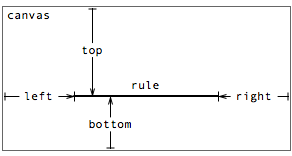

Rule
The rule mark type represents a horizontal or vertical line segment that can be stroked (via strokeStyle). Rules are used most frequently for axes and grid lines.
See also: pv.Rule API reference
Examples: Box-and-Whisker Plots, Candlestick Charts
Placement
A rule’s placement is specified through one or more properties:
- top - the distance from the top edge of the parent panel to the rule.
- left - the distance from the left edge of the parent panel to the rule.
- bottom - the distance from the bottom edge of the parent panel to the rule.
- right - the distance from the right edge of the parent panel to the rule.
- width - the width of the rule.
- height - the height of the rule.
Note that the properties together over-specify the position of the rule. In practice, either one or three properties is used. When one property is used, the rule spans the canvas; when three properties are used, the start and end point of the rule can be offset from the edge.
Horizontal rules
For example, to draw a horizontal axis beneath a bar chart, use the bottom property:
var vis = new pv.Panel()
.width(150)
.height(150);
vis.add(pv.Bar)
.data([1, 1.2, 1.7, 1.5, .7])
.bottom(10)
.width(20)
.height(function(d) d * 70)
.left(function() this.index * 25 + 15);
vis.add(pv.Rule)
.bottom(9.5);
vis.render();
|
Note that the rule is added to the visualization (vis) rather than the bars. This is because we only want to draw a single axis, rather than one axis per bar. If we want to draw grid lines in addition to the axis, we can use range to instantiate a number of equispaced rules:
var vis = new pv.Panel()
.width(150)
.height(150);
vis.add(pv.Bar)
.data([1, 1.2, 1.7, 1.5, .7])
.bottom(10)
.width(20)
.height(function(d) d * 70)
.left(function() this.index * 25 + 15);
vis.add(pv.Rule)
.data(pv.range(0, 2, .5))
.bottom(function(d) d * 70 + 9.5)
.strokeStyle(function(d) d ? "white" : "black");
vis.render();
|
Alternatively we can draw the grid lines first in black, so that they appear underneath the bars. This is perhaps the more traditional approach, though arguably it suffers from increased visual clutter:
var vis = new pv.Panel()
.width(150)
.height(150);
vis.add(pv.Rule)
.data(pv.range(0, 2, .5))
.bottom(function(d) d * 70 + 9.5)
.strokeStyle("black");
vis.add(pv.Bar)
.data([1, 1.2, 1.7, 1.5, .7])
.bottom(10)
.width(20)
.height(function(d) d * 70)
.left(function() this.index * 25 + 15);
vis.render();
|
Use the left and right in conjunction with bottom allows the width of the rule to be specified:
new pv.Panel()
.width(150)
.height(150)
.add(pv.Bar)
.data([1, 1.2, 1.7, 1.5, .7])
.bottom(10)
.width(20)
.height(function(d) d * 70)
.left(function() this.index * 25 + 15)
.root.add(pv.Rule)
.bottom(9.5)
.left(15)
.right(15)
.root.render();
|
Care should obviously be taken so that the axis and grid lines are meaningful, in that they are spaced and positioned consistently with the other visual elements that they decorate. Scales can help with that. In some cases it may be useful to use a panel to offset the bottom margin, rather than offsetting manually.
Vertical Rules
Using left or right as the primary specification allows the construction of vertical rules. The meaning of the parameters is similar to the horizontal configuration:

Repeating the earlier bar chart example, this time vertically:
var vis = new pv.Panel()
.width(150)
.height(150);
vis.add(pv.Bar)
.data([1, 1.2, 1.7, 1.5, .7])
.left(10)
.height(20)
.width(function(d) d * 70)
.top(function() this.index * 25 + 15);
vis.add(pv.Rule)
.data(pv.range(0, 2, .5))
.left(function(d) d * 70 + 9.5)
.strokeStyle(function(d) d ? "white" : "black");
vis.render();
|
In this example, simply by defining left instead of bottom, the rule is rendered vertically instead of horizontally, offset from the left edge of the panel. To describe this behavior more explicitly, horizontal rules are used when the following property combinations are non-null:
- left, right, bottom
- left, right, top
- bottom
- top
Similarly, vertical rules are used with these combinations:
- bottom, top, left
- bottom, top, right
- left
- right
Other combinations of properties are not meaningful and should not be used.
Using width and height
Here’s an example using width to create horizontal ticks:
var vis = new pv.Panel()
.width(150)
.height(140)
.bottom(10);
vis.add(pv.Bar)
.data([1, 1.2, 1.7, 1.5, .7])
.bottom(0)
.width(20)
.height(function(d) d * 70)
.left(function() this.index * 25 + 15);
vis.add(pv.Rule)
.bottom(0.5)
.add(pv.Rule)
.data(pv.range(.5, 2, .5))
.bottom(function(d) d * 70 + .5)
.left(0)
.width(5);
vis.render();
|
Description forthcoming.
Style
Like a line, a rule’s visual style is specified through two optional attributes:
- strokeStyle - the stroke color.
- lineWidth - the stroke thickness.
By default, the strokeStyle color is is black. The default lineWidth is 1.
See the color documentation for more examples of acceptable values for stroke and fill styles.